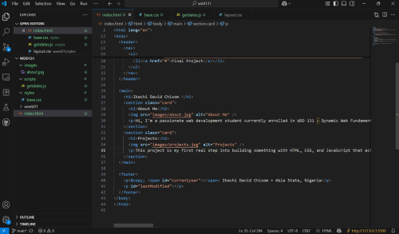

Ikechi David Chisom
About Me
Hi, I'm a passionate web development student currently enrolled in WDD 131 – Dynamic Web Fundamentals. I enjoy exploring the intersection of design and functionality, and I'm always eager to learn new technologies that help bring ideas to life. Whether it's building responsive layouts or experimenting with JavaScript, I love the challenge of creating clean, user-friendly web experiences. I'm based in Nigeria and excited to grow my skills and contribute to meaningful digital projects.
Projects
This project is my first real step into building something with HTML, CSS, and JavaScript that actually lives on the web. It’s a simple course homepage, but I’ve put effort into making it clean, responsive, and functional. I used semantic HTML to structure the page properly, styled it with CSS Grid and Flexbox, and added a bit of JavaScript to make the footer update automatically. It might not be flashy, but it’s mine—and it works. I learned how to organize my files, link everything together, and make sure the layout looks good on different screen sizes. I’m proud of how far I’ve come, and I’m excited to keep improving and building more complex projects as the course goes on.